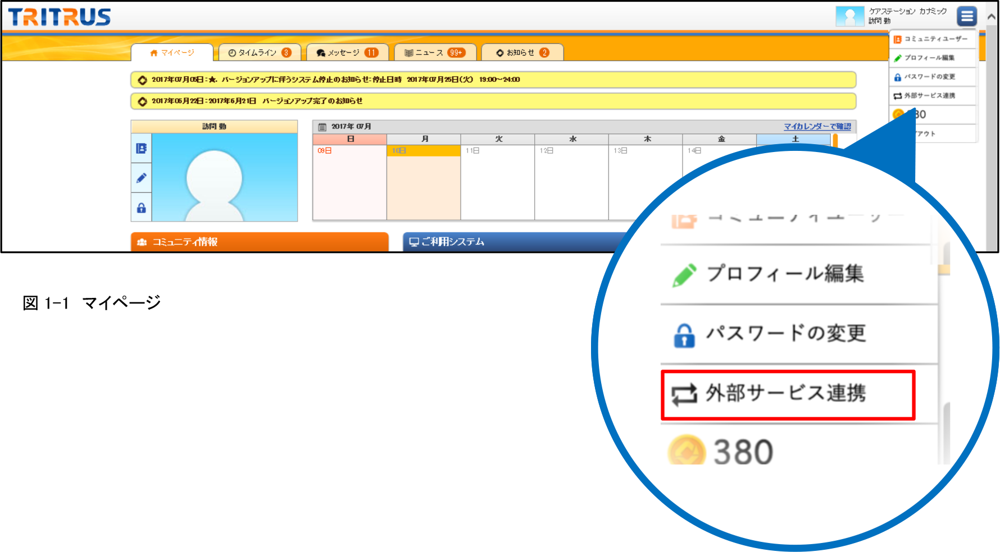
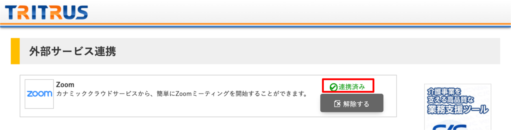
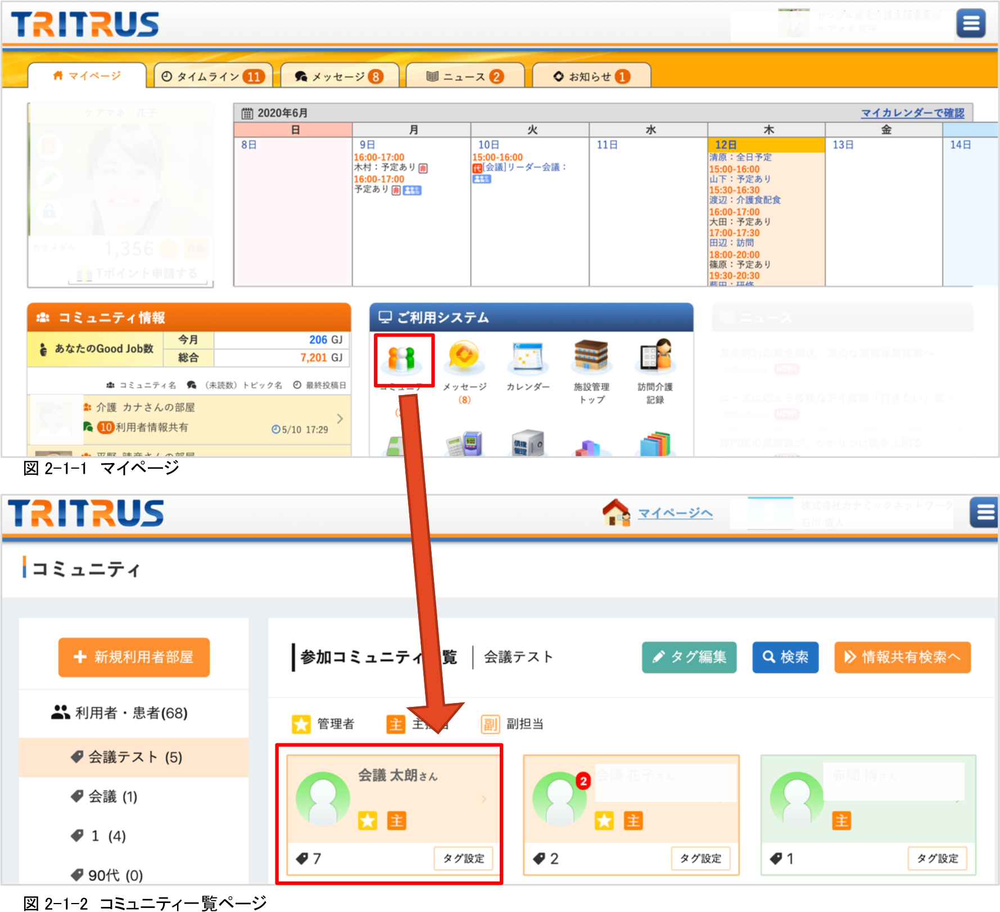
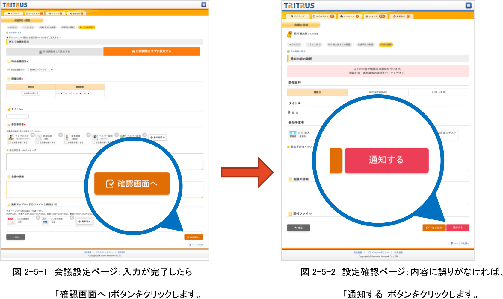
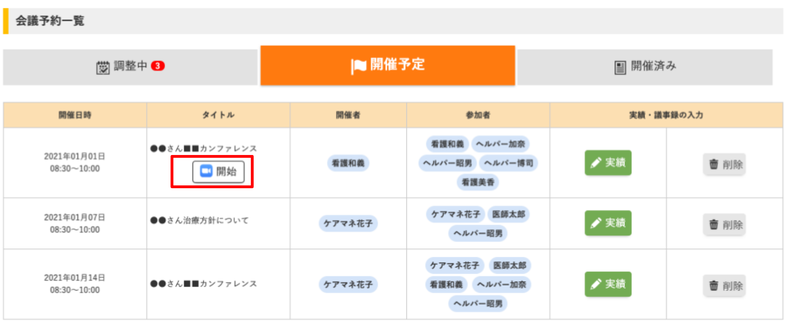

≪前提≫
-
・Zoomアカウントを取得していること
- ・カナミック クラウドサービスのアカウントを取得していること
１．カナミック クラウドサービスにログイン後、右上のメニューから「外部サービス連携」
をクリックします。(図1-1参照)

２．外部サービス連携ページのZoomの欄にある「連携する」ボタンをクリックします。

図1-2 外部サービス連携ページ
３．Zoom側の画面が表示されます。
ログイン後、以下のような画面に遷移しますので、内容を確認後、「許可」ボタンをクリックしてください。(図1-3参照)

図1-3 Zoomリクエスト確認ページ
４．外部サービス連携ページに戻ると、連携済みを確認することができます。(図1-4参照)

図1-4 外部サービス連携ページ（Zoom連携後）
※「解除する」ボタンをクリックすると、Zoomとの連携を解除することができます。
１．会議を行いたい利用者（患者）部屋へ移動します。(図2-1-1、図2-1-2参照)

２．「会議予約・調整」をクリックします。(図2-2参照)
３．会議予約・調整画面から「新しく会議を設定」をクリックします。（図2-3参照)

図2-3 会議予約・調整ページ
４．「日程調整せずに設定する」をクリックし、Web会議設定で「Zoomミーティング」を選択します。（図2-4参照) Click on 「日程調整せずに設定する」
※「日程調整をして設定する」場合も同じようにZoomミーティングを開始できます。

図2-4 会議設定ページ
５．その他必要事項（開催日時、参加予定者等）を入力後、画面下部の「確認画面へ」ボタンをクリックし(図2-5-1参照)、内容確認後、「通知する」ボタンで会議を確定します。(図2-5-2参照)

６．設定した会議の時間（会議の10分前から）になると、会議予約・調整画面に「開始」ボタンが
表示されますので、クリックするとZoomミーティンを開始することができます。
（図2-6参照)

図2-6 会議予約・調整画面：開催予定欄に、設定した会議の一覧が表示されます。